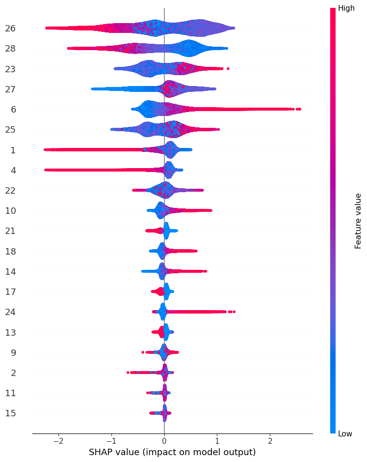

Credit Risk Prediction#
This is a German credit risk dataset that can be found on Kaggle German Risk. My goal is to create a predictive model, use this model to generate a score for each client, and ultimately classify clients into risk profiles, differentiating between the riskiest and least risky
Introduction#
Context
Each person is classified as having good or bad credit risk according to the set of attributes. The selected attributes are:
Age (numeric)
Sex (text: male, female)
Job (numeric: 0 - unskilled and non-resident, 1 - unskilled and resident, 2 - skilled, 3 - highly skilled)
Housing (text: own, rent, or free)
Saving accounts (text - little, moderate, quite rich, rich)
Checking account (text - little, moderate, rich)
Credit amount (numeric, in DM)
Duration (numeric, in month)
Purpose(text: car, furniture/equipment, radio/TV, domestic appliances, repairs, education, business, vacation/others)
Risk (Value target - Good or Bad Risk)
The business team came to you because they want to understand the behavior and the profile of the most risk clients and our goal here is to create a predictive model to help them
My goal here is to create a prediction model. I’ll use Optuna for hyperparameter optimization then ‘rank’ the customer in scores and then use the shap to identify each variable as the most important
Dataset#
import numpy as np
import pandas as pd
import sys
import timeit
import gc
import sklearn
from sklearn.model_selection import KFold
import seaborn
from sklearn import metrics
from sklearn.metrics import confusion_matrix
from sklearn.model_selection import cross_val_score
from sklearn.model_selection import train_test_split
import lightgbm
from sklearn.tree import DecisionTreeClassifier
from sklearn.ensemble import RandomForestClassifier
from sklearn.linear_model import LogisticRegression
from sklearn.naive_bayes import GaussianNB
from sklearn.svm import SVC
from catboost import CatBoostClassifier
from xgboost import XGBClassifier
from lightgbm import LGBMClassifier
from sklearn.metrics import roc_auc_score
from sklearn.metrics import accuracy_score
import optuna
import matplotlib.pylab as plt
import seaborn as sns
import plotly.offline as py
py.init_notebook_mode(connected=True)
import plotly.graph_objs as go
import plotly.tools as tls
from collections import Counter
# read the dataset
df = pd.read_csv('german_credit_data.csv')
df
| Unnamed: 0 | Age | Sex | Job | Housing | Saving accounts | Checking account | Credit amount | Duration | Purpose | Risk | |
|---|---|---|---|---|---|---|---|---|---|---|---|
| 0 | 0 | 67 | male | 2 | own | NaN | little | 1169 | 6 | radio/TV | good |
| 1 | 1 | 22 | female | 2 | own | little | moderate | 5951 | 48 | radio/TV | bad |
| 2 | 2 | 49 | male | 1 | own | little | NaN | 2096 | 12 | education | good |
| 3 | 3 | 45 | male | 2 | free | little | little | 7882 | 42 | furniture/equipment | good |
| 4 | 4 | 53 | male | 2 | free | little | little | 4870 | 24 | car | bad |
| ... | ... | ... | ... | ... | ... | ... | ... | ... | ... | ... | ... |
| 995 | 995 | 31 | female | 1 | own | little | NaN | 1736 | 12 | furniture/equipment | good |
| 996 | 996 | 40 | male | 3 | own | little | little | 3857 | 30 | car | good |
| 997 | 997 | 38 | male | 2 | own | little | NaN | 804 | 12 | radio/TV | good |
| 998 | 998 | 23 | male | 2 | free | little | little | 1845 | 45 | radio/TV | bad |
| 999 | 999 | 27 | male | 2 | own | moderate | moderate | 4576 | 45 | car | good |
1000 rows × 11 columns
Looking at the Type of Data
Null Numbers or/and Unique values
# knowing the shape of the data and search for missing
print(df.info())
<class 'pandas.core.frame.DataFrame'>
RangeIndex: 1000 entries, 0 to 999
Data columns (total 11 columns):
# Column Non-Null Count Dtype
--- ------ -------------- -----
0 Unnamed: 0 1000 non-null int64
1 Age 1000 non-null int64
2 Sex 1000 non-null object
3 Job 1000 non-null int64
4 Housing 1000 non-null object
5 Saving accounts 817 non-null object
6 Checking account 606 non-null object
7 Credit amount 1000 non-null int64
8 Duration 1000 non-null int64
9 Purpose 1000 non-null object
10 Risk 1000 non-null object
dtypes: int64(5), object(6)
memory usage: 86.1+ KB
None
# looking unique values
print(df.nunique())
Unnamed: 0 1000
Age 53
Sex 2
Job 4
Housing 3
Saving accounts 4
Checking account 3
Credit amount 921
Duration 33
Purpose 8
Risk 2
dtype: int64
EDA#
Let’s start looking through the target variable and their distribution, here I’ll show only some variables that I thought they have some interesting distribution, to see the others look the Notebook in the GitHub Repository
df_age = df['Age'].values.tolist()
df_good = df.loc[df["Risk"] == 'good']['Age'].values.tolist()
df_bad = df.loc[df["Risk"] == 'bad']['Age'].values.tolist()
hist_1 = go.Histogram(
x=df_good,
histnorm='probability',
name="Good Credit"
)
hist_2 = go.Histogram(
x=df_bad,
histnorm='probability',
name="Bad Credit"
)
hist_3 = go.Histogram(
x=df_age,
histnorm='probability',
name="Overall Age"
)
data = [hist_1, hist_2, hist_3]
layout = dict(
title="Type of Credit by Age",
xaxis = dict(title="Age")
)
fig = dict(data=data, layout=layout)
py.iplot(fig, filename='custom-sized-subplot-with-subplot-titles')
 We can see that people with Bad Credit tend to more youth
We can see that people with Bad Credit tend to more youth
df_housing = df['Housing'].values.tolist()
df_good = df.loc[df["Risk"] == 'good']['Housing'].values.tolist()
df_bad = df.loc[df["Risk"] == 'bad']['Housing'].values.tolist()
hist_1 = go.Histogram(
x=df_good,
histnorm='probability',
name="Good Credit"
)
hist_2 = go.Histogram(
x=df_bad,
histnorm='probability',
name="Bad Credit"
)
hist_3 = go.Histogram(
x=df_housing,
histnorm='probability',
name="Overall Housing"
)
data = [hist_1, hist_2, hist_3]
layout = dict(
title="Type of Credit by Housing",
xaxis = dict(title="Housing")
)
fig = dict(data=data, layout=layout)
py.iplot(fig, filename='custom-sized-subplot-with-subplot-titles')
People who own a house have better credit.
df_saving = df['Saving accounts'].values.tolist()
df_good = df.loc[df["Risk"] == 'good']['Saving accounts'].values.tolist()
df_bad = df.loc[df["Risk"] == 'bad']['Saving accounts'].values.tolist()
hist_1 = go.Histogram(
x=df_good,
histnorm='probability',
name="Good Credit"
)
hist_2 = go.Histogram(
x=df_bad,
histnorm='probability',
name="Bad Credit"
)
hist_3 = go.Histogram(
x=df_saving,
histnorm='probability',
name="Overall saving"
)
data = [hist_1, hist_2, hist_3]
layout = dict(
title="Type of Credit by Saving",
xaxis = dict(title="Saving")
)
fig = dict(data=data, layout=layout)
py.iplot(fig, filename='custom-sized-subplot-with-subplot-titles')
People with more savings accounts also have better credit
df_checking = df['Checking account'].values.tolist()
df_good = df.loc[df["Risk"] == 'good']['Checking account'].values.tolist()
df_bad = df.loc[df["Risk"] == 'bad']['Checking account'].values.tolist()
hist_1 = go.Histogram(
x=df_good,
histnorm='probability',
name="Good Credit"
)
hist_2 = go.Histogram(
x=df_bad,
histnorm='probability',
name="Bad Credit"
)
hist_3 = go.Histogram(
x=df_checking,
histnorm='probability',
name="Overall checking account"
)
data = [hist_1, hist_2, hist_3]
layout = dict(
title="Type of Credit by Checking Account",
xaxis = dict(title="Checking Account")
)
fig = dict(data=data, layout=layout)
py.iplot(fig, filename='custom-sized-subplot-with-subplot-titles')
The same here, people with more checking account has better credit
df_credit = df['Credit amount'].values.tolist()
df_good = df.loc[df["Risk"] == 'good']['Credit amount'].values.tolist()
df_bad = df.loc[df["Risk"] == 'bad']['Credit amount'].values.tolist()
hist_1 = go.Histogram(
x=df_good,
histnorm='probability',
name="Good Credit"
)
hist_2 = go.Histogram(
x=df_bad,
histnorm='probability',
name="Bad Credit"
)
hist_3 = go.Histogram(
x=df_credit,
histnorm='probability',
name="Overall Credit amount"
)
data = [hist_1, hist_2, hist_3]
layout = dict(
title="Type of Credit by Credit amount",
xaxis = dict(title="Credit amount")
)
fig = dict(data=data, layout=layout)
py.iplot(fig, filename='custom-sized-subplot-with-subplot-titles')
People with more than 4k in credit amount have worse credit than people with less
df_purpose = df['Purpose'].values.tolist()
df_good = df.loc[df["Risk"] == 'good']['Purpose'].values.tolist()
df_bad = df.loc[df["Risk"] == 'bad']['Purpose'].values.tolist()
hist_1 = go.Histogram(
x=df_good,
histnorm='probability',
name="Good Credit"
)
hist_2 = go.Histogram(
x=df_bad,
histnorm='probability',
name="Bad Credit"
)
hist_3 = go.Histogram(
x=df_purpose,
histnorm='probability',
name="Overall Purpose"
)
data = [hist_1, hist_2, hist_3]
layout = dict(
title="Type of Credit by Purpose",
xaxis = dict(title="Purpose")
)
fig = dict(data=data, layout=layout)
py.iplot(fig, filename='custom-sized-subplot-with-subplot-titles')
 People that the purpose is to buy radio/TV have a better credit
People that the purpose is to buy radio/TV have a better credit
Now let’s see the distribution using two variables
df_good = df.loc[df["Risk"] == 'good']['Checking account'].values.tolist()
df_bad = df.loc[df["Risk"] == 'bad']['Checking account'].values.tolist()
box_1 = go.Box(
x=df_good,
y=df['Credit amount'],
name="Good Credit"
)
box_2 = go.Box(
x=df_bad,
y=df['Credit amount'],
name="Bad Credit"
)
data = [box_1, box_2]
layout = go.Layout(
yaxis=dict(
title='Credit Amount by Checking Account'
),
boxmode='group'
)
fig = go.Figure(data=data, layout=layout)
py.iplot(fig, filename='box-age-cat')
The credit amount is also less in rich people (checking account), even in those bad credit
df_good = df.loc[df["Risk"] == 'good']['Job'].values.tolist()
df_bad = df.loc[df["Risk"] == 'bad']['Job'].values.tolist()
box_1 = go.Box(
x=df_good,
y=df['Credit amount'],
name="Good Credit"
)
box_2 = go.Box(
x=df_bad,
y=df['Credit amount'],
name="Bad Credit"
)
data = [box_1, box_2]
layout = go.Layout(
yaxis=dict(
title='Job'
),
boxmode='group'
)
fig = go.Figure(data=data, layout=layout)
py.iplot(fig, filename='box-age-cat')
Unskilled and non-residents with bad credit have more credit amount than others
Preprocessing#
df.dtypes
Unnamed: 0 int64
Age int64
Sex object
Job int64
Housing object
Saving accounts object
Checking account object
Credit amount int64
Duration int64
Purpose object
Risk object
dtype: object
df.isna().sum()
Unnamed: 0 0
Age 0
Sex 0
Job 0
Housing 0
Saving accounts 183
Checking account 394
Credit amount 0
Duration 0
Purpose 0
Risk 0
dtype: int64
We will use one-hot encoding for the sex, housing, and purpose variables.
one_hot = {
"Sex": "sex",
"Housing": "hous",
"Purpose": "purp"
}
And ordinal encoding for the others
ordinal_encoding = {
"Saving accounts": {
None: 0,
"little": 1,
"moderate": 2,
"quite rich": 3,
"rich": 4,
},
"Checking account": {
None: 0,
"little": 1,
"moderate": 2,
"rich": 3,
},
"Risk": {
"bad": 1,
"good": 0,
}
}
def one_hot_enconding(df, col_prefix: dict):
df = df.copy()
for col, prefix in col_prefix.items():
df = pd.get_dummies(data=df, prefix=prefix, columns=[col])
return df
def encode_ordinal(df, custom_ordinals: dict):
df = df.copy()
for col, map_dict in custom_ordinals.items():
df[col] = df[col].replace(map_dict)
return df
df_encode = df.copy()
df_encode = one_hot_enconding(df_encode, one_hot)
df_encode = encode_ordinal(df_encode, ordinal_encoding)
df_encode
| Unnamed: 0 | Age | Job | Saving accounts | Checking account | Credit amount | Duration | Risk | sex_female | sex_male | ... | hous_own | hous_rent | purp_business | purp_car | purp_domestic appliances | purp_education | purp_furniture/equipment | purp_radio/TV | purp_repairs | purp_vacation/others | |
|---|---|---|---|---|---|---|---|---|---|---|---|---|---|---|---|---|---|---|---|---|---|
| 0 | 0 | 67 | 2 | 0 | 1 | 1169 | 6 | 0 | 0 | 1 | ... | 1 | 0 | 0 | 0 | 0 | 0 | 0 | 1 | 0 | 0 |
| 1 | 1 | 22 | 2 | 1 | 2 | 5951 | 48 | 1 | 1 | 0 | ... | 1 | 0 | 0 | 0 | 0 | 0 | 0 | 1 | 0 | 0 |
| 2 | 2 | 49 | 1 | 1 | 0 | 2096 | 12 | 0 | 0 | 1 | ... | 1 | 0 | 0 | 0 | 0 | 1 | 0 | 0 | 0 | 0 |
| 3 | 3 | 45 | 2 | 1 | 1 | 7882 | 42 | 0 | 0 | 1 | ... | 0 | 0 | 0 | 0 | 0 | 0 | 1 | 0 | 0 | 0 |
| 4 | 4 | 53 | 2 | 1 | 1 | 4870 | 24 | 1 | 0 | 1 | ... | 0 | 0 | 0 | 1 | 0 | 0 | 0 | 0 | 0 | 0 |
| ... | ... | ... | ... | ... | ... | ... | ... | ... | ... | ... | ... | ... | ... | ... | ... | ... | ... | ... | ... | ... | ... |
| 995 | 995 | 31 | 1 | 1 | 0 | 1736 | 12 | 0 | 1 | 0 | ... | 1 | 0 | 0 | 0 | 0 | 0 | 1 | 0 | 0 | 0 |
| 996 | 996 | 40 | 3 | 1 | 1 | 3857 | 30 | 0 | 0 | 1 | ... | 1 | 0 | 0 | 1 | 0 | 0 | 0 | 0 | 0 | 0 |
| 997 | 997 | 38 | 2 | 1 | 0 | 804 | 12 | 0 | 0 | 1 | ... | 1 | 0 | 0 | 0 | 0 | 0 | 0 | 1 | 0 | 0 |
| 998 | 998 | 23 | 2 | 1 | 1 | 1845 | 45 | 1 | 0 | 1 | ... | 0 | 0 | 0 | 0 | 0 | 0 | 0 | 1 | 0 | 0 |
| 999 | 999 | 27 | 2 | 2 | 2 | 4576 | 45 | 0 | 0 | 1 | ... | 1 | 0 | 0 | 1 | 0 | 0 | 0 | 0 | 0 | 0 |
1000 rows × 21 columns
df_encode.dtypes
Unnamed: 0 int64
Age int64
Job int64
Saving accounts int64
Checking account int64
Credit amount int64
Duration int64
Risk int64
sex_female uint8
sex_male uint8
hous_free uint8
hous_own uint8
hous_rent uint8
purp_business uint8
purp_car uint8
purp_domestic appliances uint8
purp_education uint8
purp_furniture/equipment uint8
purp_radio/TV uint8
purp_repairs uint8
purp_vacation/others uint8
dtype: object
df_encode.isna().sum()
Unnamed: 0 0
Age 0
Job 0
Saving accounts 0
Checking account 0
Credit amount 0
Duration 0
Risk 0
sex_female 0
sex_male 0
hous_free 0
hous_own 0
hous_rent 0
purp_business 0
purp_car 0
purp_domestic appliances 0
purp_education 0
purp_furniture/equipment 0
purp_radio/TV 0
purp_repairs 0
purp_vacation/others 0
dtype: int64
# Check for duplicate rows
df.duplicated().sum()
0
df_encode.corr()['Risk'].sort_values()
hous_own -0.134589
purp_radio/TV -0.106922
Age -0.091127
sex_male -0.075493
Saving accounts -0.033871
purp_domestic appliances 0.008016
purp_repairs 0.020828
purp_furniture/equipment 0.020971
purp_car 0.022621
purp_vacation/others 0.028058
Job 0.032735
Unnamed: 0 0.034606
purp_business 0.036129
purp_education 0.049085
sex_female 0.075493
hous_free 0.081556
hous_rent 0.092785
Credit amount 0.154739
Checking account 0.197788
Duration 0.214927
Risk 1.000000
Name: Risk, dtype: float64
df_encode.columns
Index(['Unnamed: 0', 'Age', 'Job', 'Saving accounts', 'Checking account',
'Credit amount', 'Duration', 'Risk', 'sex_female', 'sex_male',
'hous_free', 'hous_own', 'hous_rent', 'purp_business', 'purp_car',
'purp_domestic appliances', 'purp_education',
'purp_furniture/equipment', 'purp_radio/TV', 'purp_repairs',
'purp_vacation/others'],
dtype='object')
Getting all the coluns that we are going to use in our model.
model_cols = ['Age', 'Job', 'Saving accounts', 'Checking account',
'Credit amount', 'Duration', 'sex_female', 'sex_male',
'hous_free', 'hous_own', 'hous_rent', 'purp_business', 'purp_car',
'purp_domestic appliances', 'purp_education',
'purp_furniture/equipment', 'purp_radio/TV', 'purp_repairs',
'purp_vacation/others']
df_encode.loc[df_encode['Risk']==0].mean()
Unnamed: 0 492.960000
Age 36.224286
Job 1.890000
Saving accounts 1.211429
Checking account 0.877143
Credit amount 2985.457143
Duration 19.207143
Risk 0.000000
sex_female 0.287143
sex_male 0.712857
hous_free 0.091429
hous_own 0.752857
hous_rent 0.155714
purp_business 0.090000
purp_car 0.330000
purp_domestic appliances 0.011429
purp_education 0.051429
purp_furniture/equipment 0.175714
purp_radio/TV 0.311429
purp_repairs 0.020000
purp_vacation/others 0.010000
dtype: float64
df_encode.loc[df_encode['Risk']==1].mean()
Unnamed: 0 514.760000
Age 33.963333
Job 1.936667
Saving accounts 1.140000
Checking account 1.290000
Credit amount 3938.126667
Duration 24.860000
Risk 1.000000
sex_female 0.363333
sex_male 0.636667
hous_free 0.146667
hous_own 0.620000
hous_rent 0.233333
purp_business 0.113333
purp_car 0.353333
purp_domestic appliances 0.013333
purp_education 0.076667
purp_furniture/equipment 0.193333
purp_radio/TV 0.206667
purp_repairs 0.026667
purp_vacation/others 0.016667
dtype: float64
some correlation
df_encode.astype(float).corr().abs().sort_values(by='Risk',ascending=False)['Risk']
Risk 1.000000
Duration 0.214927
Checking account 0.197788
Credit amount 0.154739
hous_own 0.134589
purp_radio/TV 0.106922
hous_rent 0.092785
Age 0.091127
hous_free 0.081556
sex_female 0.075493
sex_male 0.075493
purp_education 0.049085
purp_business 0.036129
Unnamed: 0 0.034606
Saving accounts 0.033871
Job 0.032735
purp_vacation/others 0.028058
purp_car 0.022621
purp_furniture/equipment 0.020971
purp_repairs 0.020828
purp_domestic appliances 0.008016
Name: Risk, dtype: float64
Duration, checking account, credit amount, and owning house have the most Corr
plt.figure(figsize=(15,15))
sns.heatmap(df_encode.astype(float).corr(),linewidths=0.1,vmax=1.0,
square=True, linecolor='white', annot=True)
plt.show()
Training some Models#
X = df_encode.loc[:,model_cols]
y = df_encode.loc[:,'Risk']
X_train, X_test, y_train, y_test = train_test_split(X, y, test_size=0.3, random_state=42)
X_train.shape, X_test.shape, y_train.shape, y_test.shape
((700, 19), (300, 19), (700,), (300,))
Here we are going to train 5 models
# prepare models
lgbmparameters = {'verbose': -1}
models = []
models.append(('XGB', XGBClassifier()))
models.append(('CART', DecisionTreeClassifier()))
models.append(('LGBM', LGBMClassifier(**lgbmparameters)))
models.append(('RF', RandomForestClassifier()))
models.append(('NB', GaussianNB()))
# evaluate each model in turn
results = []
names = []
scoring = 'roc_auc'
n_splits = 10
for name, model in models:
kfold = KFold(n_splits=n_splits)
cv_results = cross_val_score(model, X_train, y_train, cv=kfold, scoring=scoring)
results.append(cv_results)
names.append(name)
msg = "%s: %f (%f)" % (name, cv_results.mean(), cv_results.std())
print(msg)
XGB: 0.720764 (0.055151)
CART: 0.598842 (0.066576)
LGBM: 0.733702 (0.062989)
RF: 0.722074 (0.052949)
NB: 0.685554 (0.082030)
box_1 = go.Box(
x=n_splits*['XGB'],
y=results[0],
name="XGB"
)
box_2 = go.Box(
x=n_splits*['CART'],
y=results[1],
name="CART"
)
box_3 = go.Box(
x=n_splits*['LGBM'],
y=results[2],
name="LGBM"
)
box_4 = go.Box(
x=n_splits*['RF'],
y=results[3],
name="RF"
)
box_5 = go.Box(
x=n_splits*['NB'],
y=results[4],
name="NB"
)
data = [box_1, box_2, box_3, box_4, box_5]
layout = go.Layout(
yaxis=dict(
title='Model Results'
),
boxmode='group'
)
fig = go.Figure(data=data, layout=layout)
py.iplot(fig, filename='box-age-cat')
The best models were RandomForest and LGBM, we are going to train this model and use Optuna for hyperparameter optimization.
lgbm_model = LGBMClassifier(**lgbmparameters).fit(X_train, y_train)
y_prob_lgbm = lgbm_model.predict_proba(X_test)
print('For the LGBM Model, the test AUC is: '+str(roc_auc_score(y_test,y_prob_lgbm[:,1])))
print('For the LGBM Model, the test Accu is: '+ str(accuracy_score(y_test,y_prob_lgbm[:,1].round())))
For the LGBM Model, the test AUC is: 0.7434670592565329
For the LGBM Model, the test Accu is: 0.7533333333333333
rf_model = RandomForestClassifier().fit(X_train, y_train)
y_prob_rf = rf_model.predict_proba(X_test)
print('For the RandomForest Model, the test AUC is: '+str(roc_auc_score(y_test,y_prob_rf[:,1])))
print('For the RandomForest Model, the test Accu is: '+ str(accuracy_score(y_test,y_prob_rf[:,1].round())))
For the RandomForest Model, the test AUC is: 0.7218308007781692
For the RandomForest Model, the test Accu is: 0.7266666666666667
Hyperparameter Optimization using Optuna#
def auc_ks_metric(y_test, y_prob):
'''
Input:
y_prob: model predict prob
y_test: target
Output: Metrics of validation
auc, ks (Kolmogorov-Smirnov)
'''
fpr, tpr, thresholds = metrics.roc_curve(y_test, y_prob)
auc = metrics.auc(fpr, tpr)
ks = max(tpr - fpr)
return auc, ks
def objective(trial, X_train, y_train, X_test, y_test, balanced, method):
'''
Input:
trial: trial of the test
X_train:
y_train:
X_test:
y_test:
balanced:balanced or None
method: XGBoost, CatBoost or LGBM
Output: Metrics of validation
auc, ks, log_loss
auc_logloss_ks(y_test, y_pred)[0]
'''
gc.collect()
if method=='LGBM':
param_grid = {'learning_rate': trial.suggest_float('learning_rate', 0.0001, 0.1, log=True),
'num_leaves': trial.suggest_int('num_leaves', 2, 256),
'lambda_l1': trial.suggest_float("lambda_l1", 1e-8, 10.0, log=True),
'lambda_l2': trial.suggest_float("lambda_l2", 1e-8, 10.0, log=True),
'min_data_in_leaf': trial.suggest_int('min_data_in_leaf', 5, 100),
'max_depth': trial.suggest_int('max_depth', 5, 64),
'feature_fraction': trial.suggest_float("feature_fraction", 0.4, 1.0),
'bagging_fraction': trial.suggest_float("bagging_fraction", 0.4, 1.0),
'bagging_freq': trial.suggest_int("bagging_freq", 1, 7),
'verbose': -1
}
model = LGBMClassifier(**param_grid,tree_method='gpu_hist',gpu_id=0)
print('LGBM - Optimization using optuna')
model.fit(X_train, y_train)
y_pred = model.predict_proba(X_test)[:,1]
if method=='RF':
param_grid = {
'max_features': trial.suggest_int('max_features', 4, 20),
'min_samples_leaf': trial.suggest_int('min_samples_leaf', 2, 25),
'max_depth': trial.suggest_int('max_depth', 5, 64),
'min_samples_split': trial.suggest_int("min_samples_split", 2, 30),
'n_estimators': trial.suggest_int("n_estimators", 100, 2000)
}
model = RandomForestClassifier(**param_grid)
print('RandomForest - Optimization using optuna')
model.fit(X_train, y_train)
y_pred = model.predict_proba(X_test)[:,1]
if method=='XGBoost':
param_grid = {'learning_rate': trial.suggest_float('learning_rate', 0.0001, 0.1, log=True),
'max_depth': trial.suggest_int('max_depth', 3, 16),
'min_child_weight': trial.suggest_int('min_child_weight', 1, 300),
'gamma': trial.suggest_float('gamma', 1e-8, 1.0, log = True),
'alpha': trial.suggest_float('alpha', 1e-8, 1.0, log = True),
'lambda': trial.suggest_float('lambda', 0.0001, 10.0, log = True),
'colsample_bytree': trial.suggest_float('colsample_bytree', 0.1, 0.8),
'booster': 'gbtree',
'random_state': 42,
}
model = XGBClassifier(**param_grid,tree_method='gpu_hist',gpu_id=0)
print('XGBoost - Optimization using optuna')
model.fit(X_train, y_train,verbose=False)
y_pred = model.predict_proba(X_test)[:,1]
auc_res = auc_ks_metric(y_test, y_pred)[0]
print('auc:'+str(auc_res))
return auc_ks_metric(y_test, y_pred)[0]
def tuning(X_train, y_train, X_test, y_test, balanced, method):
'''
Input:
trial:
x_train:
y_train:
X_test:
y_test:
balanced:balanced or not balanced
method: XGBoost, CatBoost or LGBM
Output: Metrics of validation
auc, ks, log_loss
auc_logloss_ks(y_test, y_pred)[0]
'''
study = optuna.create_study(direction='maximize', study_name=method+' Classifier')
func = lambda trial: objective(trial, X_train, y_train, X_test, y_test, balanced, method)
print('Starting the optimization')
time_max_tuning = 60*30 # max time in seconds to stop
study.optimize(func, timeout=time_max_tuning)
return study
def train(X_train, y_train, X_test, y_test, balanced, method):
'''
Input:
X_train:
y_train:
X_test:
y_test:
balanced:balanced or None
method: XGBoost, CatBoost or LGBM
Output: predict model
'''
print('Tuning')
study = tuning(X_train, y_train, X_test, y_test, balanced, method)
if method=='LGBM':
model = LGBMClassifier(**study.best_params)
print('Last Fit')
model.fit(X_train, y_train, eval_set=[(X_test,y_test)],
callbacks = [lightgbm.early_stopping(stopping_rounds=100), lightgbm.log_evaluation(period=5000)])
if method=='XGBoost':
model = XGBClassifier(**study.best_params)
print('Last Fit')
model.fit(X_train, y_train, eval_set=[(X_test,y_test)],
early_stopping_rounds=100,verbose = False)
if method=='RF':
model = RandomForestClassifier(**study.best_params)
print('Last Fit')
model.fit(X_train, y_train)
return model, study
lgbm_model, study_lgbm = train(X_train, y_train, X_test, y_test, balanced='balanced', method='LGBM')
[I 2023-09-25 07:48:59,504] A new study created in memory with name: LGBM Classifier
[I 2023-09-25 07:48:59,607] Trial 0 finished with value: 0.7707818497292181 and parameters: {'learning_rate': 0.04564317750022488, 'num_leaves': 254, 'lambda_l1': 0.17602474289716696, 'lambda_l2': 2.936736356867574, 'min_data_in_leaf': 92, 'max_depth': 41, 'feature_fraction': 0.630771183128692, 'bagging_fraction': 0.8791863972428846, 'bagging_freq': 5}. Best is trial 0 with value: 0.7707818497292181.
[I 2023-09-25 07:48:59,695] Trial 1 finished with value: 0.7673905042326096 and parameters: {'learning_rate': 0.03163545356039165, 'num_leaves': 93, 'lambda_l1': 5.331694642994698e-07, 'lambda_l2': 0.0016117988828970487, 'min_data_in_leaf': 62, 'max_depth': 17, 'feature_fraction': 0.5207793700543741, 'bagging_fraction': 0.6988688771949946, 'bagging_freq': 2}. Best is trial 0 with value: 0.7707818497292181.
Tuning
Starting the optimization
LGBM - Optimization using optuna
auc:0.7707818497292181
LGBM - Optimization using optuna
auc:0.7673905042326096
LGBM - Optimization using optuna
[I 2023-09-25 07:48:59,778] Trial 2 finished with value: 0.7639202902360797 and parameters: {'learning_rate': 0.00032903168736575527, 'num_leaves': 221, 'lambda_l1': 0.013182095631109458, 'lambda_l2': 0.004903360053701577, 'min_data_in_leaf': 50, 'max_depth': 35, 'feature_fraction': 0.81375010947157, 'bagging_fraction': 0.47255383236900694, 'bagging_freq': 6}. Best is trial 0 with value: 0.7707818497292181.
[I 2023-09-25 07:48:59,870] Trial 3 finished with value: 0.7488301172511699 and parameters: {'learning_rate': 0.07583419812542502, 'num_leaves': 227, 'lambda_l1': 0.001263229821256988, 'lambda_l2': 0.6714031923624736, 'min_data_in_leaf': 23, 'max_depth': 48, 'feature_fraction': 0.47371647441012454, 'bagging_fraction': 0.5357410570154348, 'bagging_freq': 3}. Best is trial 0 with value: 0.7707818497292181.
[I 2023-09-25 07:48:59,958] Trial 4 finished with value: 0.7586361007413639 and parameters: {'learning_rate': 0.0001610953746996855, 'num_leaves': 228, 'lambda_l1': 4.74483283120879, 'lambda_l2': 0.00011656154418021165, 'min_data_in_leaf': 88, 'max_depth': 60, 'feature_fraction': 0.5768682497889083, 'bagging_fraction': 0.9363888441877074, 'bagging_freq': 5}. Best is trial 0 with value: 0.7707818497292181.
auc:0.7639202902360797
LGBM - Optimization using optuna
auc:0.7488301172511699
LGBM - Optimization using optuna
auc:0.7586361007413639
LGBM - Optimization using optuna
[I 2023-09-25 07:49:00,049] Trial 5 finished with value: 0.7586098112413902 and parameters: {'learning_rate': 0.0001249838804070837, 'num_leaves': 62, 'lambda_l1': 1.0950722639611093e-08, 'lambda_l2': 1.6247452419757427, 'min_data_in_leaf': 88, 'max_depth': 20, 'feature_fraction': 0.7390198578425595, 'bagging_fraction': 0.5451921961124094, 'bagging_freq': 4}. Best is trial 0 with value: 0.7707818497292181.
[I 2023-09-25 07:49:00,135] Trial 6 finished with value: 0.7462274567537727 and parameters: {'learning_rate': 0.021165567217590234, 'num_leaves': 219, 'lambda_l1': 2.634681758289909e-06, 'lambda_l2': 2.1170808617536877e-06, 'min_data_in_leaf': 70, 'max_depth': 52, 'feature_fraction': 0.8886838094462373, 'bagging_fraction': 0.7972849312237408, 'bagging_freq': 5}. Best is trial 0 with value: 0.7707818497292181.
[I 2023-09-25 07:49:00,229] Trial 7 finished with value: 0.7455702192544299 and parameters: {'learning_rate': 0.028054358171711414, 'num_leaves': 106, 'lambda_l1': 0.2794244438193041, 'lambda_l2': 0.02038032703976737, 'min_data_in_leaf': 41, 'max_depth': 8, 'feature_fraction': 0.9320015422653435, 'bagging_fraction': 0.97584085801718, 'bagging_freq': 1}. Best is trial 0 with value: 0.7707818497292181.
[I 2023-09-25 08:18:59,736] Trial 5841 finished with value: 0.7210946947789053 and parameters: {'learning_rate': 0.0017454581670019865, 'num_leaves': 71, 'lambda_l1': 0.00030822208833371846, 'lambda_l2': 0.001178948478008598, 'min_data_in_leaf': 82, 'max_depth': 64, 'feature_fraction': 0.9975320930746641, 'bagging_fraction': 0.9612726835980929, 'bagging_freq': 1}. Best is trial 3444 with value: 0.7828487302171513.
LGBM - Optimization using optuna
auc:0.7210946947789053
Last Fit
y_prob_lgbm = lgbm_model.predict_proba(X_test)
[LightGBM] [Warning] min_data_in_leaf is set=81, min_child_samples=20 will be ignored. Current value: min_data_in_leaf=81
[LightGBM] [Warning] feature_fraction is set=0.5174527298564775, colsample_bytree=1.0 will be ignored. Current value: feature_fraction=0.5174527298564775
[LightGBM] [Warning] lambda_l2 is set=0.0003124668197733085, reg_lambda=0.0 will be ignored. Current value: lambda_l2=0.0003124668197733085
[LightGBM] [Warning] lambda_l1 is set=2.524882043205203e-06, reg_alpha=0.0 will be ignored. Current value: lambda_l1=2.524882043205203e-06
[LightGBM] [Warning] bagging_fraction is set=0.7962210156422196, subsample=1.0 will be ignored. Current value: bagging_fraction=0.7962210156422196
[LightGBM] [Warning] bagging_freq is set=1, subsample_freq=0 will be ignored. Current value: bagging_freq=1
print('For the LGBM Model, the test AUC is: '+str(roc_auc_score(y_test,y_prob_lgbm[:,1])))
print('For the LGBM Model, the KS is: '+str(auc_ks_metric(y_test,y_prob_lgbm[:,1])[1]))
print('For the LGBM Model, the test Accu is: '+ str(accuracy_score(y_test,y_prob_lgbm[:,1].round())))
For the LGBM Model, the test AUC is: 0.7828487302171513
For the LGBM Model, the KS is: 0.4945580735054419
For the LGBM Model, the test Accu is: 0.7133333333333334
confusion_hard = confusion_matrix(y_test, y_prob_lgbm[:,1].round())
plt.figure(figsize=(8, 6))
ax = sns.heatmap(confusion_hard, vmin=10, vmax=190,annot = True, fmt='d')
ax.set_title('Confusion Matrix')
Confusion Matrix in LGBM
# Generate ROC curve values: fpr, tpr, thresholds
fpr, tpr, thresholds = sklearn.metrics.roc_curve(y_test, y_prob_lgbm[:,1])
# Plot ROC curve
plt.plot([0, 1], [0, 1], 'k--')
plt.plot(fpr, tpr)
plt.xlabel('False Positive Rate')
plt.ylabel('True Positive Rate')
plt.title('ROC Curve')
plt.show()
optuna.visualization.plot_param_importances(study_lgbm)
rf_model, study_rf = train(X_train, y_train, X_test, y_test, balanced='balanced', method='RF')
[I 2023-09-25 08:32:34,955] A new study created in memory with name: RF Classifier
Tuning
Starting the optimization
RandomForest - Optimization using optuna
[I 2023-09-25 08:32:35,237] Trial 0 finished with value: 0.7599768652400232 and parameters: {'max_features': 7, 'min_samples_leaf': 21, 'max_depth': 25, 'min_samples_split': 24, 'n_estimators': 231}. Best is trial 0 with value: 0.7599768652400232.
auc:0.7599768652400232
RandomForest - Optimization using optuna
[I 2023-09-25 08:32:36,115] Trial 1 finished with value: 0.7550344392449656 and parameters: {'max_features': 6, 'min_samples_leaf': 25, 'max_depth': 63, 'min_samples_split': 27, 'n_estimators': 1132}. Best is trial 0 with value: 0.7599768652400232.
Last Fit
y_prob_rf = rf_model.predict_proba(X_test)
print('For the RandomForest Model, the test AUC is: '+str(roc_auc_score(y_test,y_prob_rf[:,1])))
print('For the RandomForest, the KS is: '+str(auc_ks_metric(y_test,y_prob_rf[:,1])[1]))
print('For the RandomForest Model, the test Accu is: '+ str(accuracy_score(y_test,y_prob_rf[:,1].round())))
For the RandomForest Model, the test AUC is: 0.7489352752510646
For the RandomForest, the KS is: 0.40080971659919035
For the RandomForest Model, the test Accu is: 0.7233333333333334
confusion_hard = confusion_matrix(y_test, y_prob_rf[:,1].round())
plt.figure(figsize=(8, 6))
ax = sns.heatmap(confusion_hard, vmin=10, vmax=190,annot = True, fmt='d')
ax.set_title('Confusion Matrix')
Confusion Matrix in RandomForest 
# Generate ROC curve values: fpr, tpr, thresholds
fpr, tpr, thresholds = sklearn.metrics.roc_curve(y_test, y_prob_rf[:,1])
# Plot ROC curve
plt.plot([0, 1], [0, 1], 'k--')
plt.plot(fpr, tpr)
plt.xlabel('False Positive Rate')
plt.ylabel('True Positive Rate')
plt.title('ROC Curve')
plt.show()
LGBM model has a better performance after the optimization using Optuna, so we’ll this model as our final model.
Ranking the final model#
import shap
explainer = shap.TreeExplainer(lgbm_model)
shap_values = explainer.shap_values(X_train)
shap.summary_plot(shap_values[1], X_train,show=False)
SHAP results in LGBM
df_test = pd.concat([X_test, y_test],axis=1)
shap_test = explainer.shap_values(X_test)
LightGBM binary classifier with TreeExplainer shap values output has changed to a list of ndarray
Here we are going to create new variables from shap. The goal is to make more easier to use our final model, for example we want to select the clients with high scores and have more cash in their checking account
def shap_col(shap_):
col = ['Age', 'Job', 'Saving accounts', 'Checking account', 'Credit amount',
'Duration', 'sex_female', 'sex_male', 'hous_free', 'hous_own',
'hous_rent', 'purp_business', 'purp_car', 'purp_domestic appliances',
'purp_education', 'purp_furniture/equipment', 'purp_radio/TV',
'purp_repairs', 'purp_vacation/others']
df_shap = pd.DataFrame(shap_test[1],columns=col)
# shap_cols = {}
# shap_cols['shap_1'] = np.nan
# shap_cols['shap_2'] = np.nan
# shap_cols['shap_3'] = np.nan
# shap_cols['shap_4'] = np.nan
# shap_cols['shap_5'] = np.nan
# shap_cols['shap_6'] = np.nan
df_shap.loc[df_shap['Checking account']>0.2, 'shap_1'] = 'Little Check Account'
df_shap.loc[df_shap['Duration']>0.2, 'shap_2'] = 'More Credit Duration'
df_shap.loc[df_shap['Credit amount']>0.2, 'shap_3'] = 'More Credit Amount'
df_shap.loc[df_shap['Age']>0.2, 'shap_4'] = 'More Junior Client'
df_shap.loc[df_shap['hous_own']>0.2, 'shap_5'] = 'Have House'
df_shap.loc[df_shap['purp_radio/TV']>0.2, 'shap_6'] = 'The purpose is to buy Radio/TV'
df_shap.loc[df_shap['Checking account']<-0.2, 'shap_7'] = 'Moderate/Rich Check Account'
df_shap.loc[df_shap['Duration']<-0.2, 'shap_8'] = 'Less Credit Duration'
df_shap.loc[df_shap['Credit amount']<-0.2, 'shap_9'] = 'Less Credit Amount'
df_shap.loc[df_shap['Age']<-0.2, 'shap_10'] = 'More Senior Client'
df_shap.loc[df_shap['hous_own']<-0.2, 'shap_11'] = 'Does not have House'
# pd.DataFrame(shap_test[1],columns=col).apply(shap_col, axis=1, result_type='expand')
return df_shap[['shap_1','shap_2','shap_3','shap_4','shap_5','shap_6',
'shap_7','shap_8','shap_9','shap_10','shap_11']]
df_shap_arg = pd.DataFrame(shap_col(shap_test[1]))
df_shap_arg
| shap_1 | shap_2 | shap_3 | shap_4 | shap_5 | shap_6 | shap_7 | shap_8 | shap_9 | shap_10 | shap_11 | |
|---|---|---|---|---|---|---|---|---|---|---|---|
| 0 | Little Check Account | NaN | NaN | More Junior Client | NaN | NaN | NaN | NaN | Less Credit Amount | NaN | NaN |
| 1 | Little Check Account | NaN | NaN | NaN | NaN | NaN | NaN | NaN | NaN | NaN | NaN |
| 2 | Little Check Account | More Credit Duration | NaN | NaN | NaN | NaN | NaN | NaN | Less Credit Amount | NaN | NaN |
| 3 | Little Check Account | NaN | More Credit Amount | More Junior Client | Have House | NaN | NaN | Less Credit Duration | NaN | NaN | NaN |
| 4 | NaN | NaN | More Credit Amount | NaN | NaN | NaN | Moderate/Rich Check Account | NaN | NaN | More Senior Client | NaN |
| ... | ... | ... | ... | ... | ... | ... | ... | ... | ... | ... | ... |
| 295 | NaN | NaN | NaN | More Junior Client | NaN | NaN | Moderate/Rich Check Account | NaN | Less Credit Amount | NaN | NaN |
| 296 | Little Check Account | More Credit Duration | NaN | NaN | NaN | NaN | NaN | NaN | NaN | NaN | NaN |
| 297 | NaN | NaN | More Credit Amount | More Junior Client | NaN | NaN | Moderate/Rich Check Account | Less Credit Duration | NaN | NaN | NaN |
| 298 | Little Check Account | More Credit Duration | More Credit Amount | NaN | Have House | NaN | NaN | NaN | NaN | NaN | NaN |
| 299 | Little Check Account | NaN | More Credit Amount | More Junior Client | Have House | NaN | NaN | Less Credit Duration | NaN | NaN | NaN |
300 rows × 11 columns
df_final = pd.concat([df_test.reset_index() ,df_shap_arg],axis=1)
df_final
| index | Age | Job | Saving accounts | Checking account | Credit amount | Duration | sex_female | sex_male | hous_free | ... | shap_2 | shap_3 | shap_4 | shap_5 | shap_6 | shap_7 | shap_8 | shap_9 | shap_10 | shap_11 | |
|---|---|---|---|---|---|---|---|---|---|---|---|---|---|---|---|---|---|---|---|---|---|
| 0 | 521 | 24 | 2 | 1 | 1 | 3190 | 18 | 1 | 0 | 0 | ... | NaN | NaN | More Junior Client | NaN | NaN | NaN | NaN | Less Credit Amount | NaN | NaN |
| 1 | 737 | 35 | 1 | 2 | 1 | 4380 | 18 | 0 | 1 | 0 | ... | NaN | NaN | NaN | NaN | NaN | NaN | NaN | NaN | NaN | NaN |
| 2 | 740 | 32 | 2 | 2 | 1 | 2325 | 24 | 0 | 1 | 0 | ... | More Credit Duration | NaN | NaN | NaN | NaN | NaN | NaN | Less Credit Amount | NaN | NaN |
| 3 | 660 | 23 | 2 | 1 | 3 | 1297 | 12 | 0 | 1 | 0 | ... | NaN | More Credit Amount | More Junior Client | Have House | NaN | NaN | Less Credit Duration | NaN | NaN | NaN |
| 4 | 411 | 35 | 3 | 1 | 0 | 7253 | 33 | 0 | 1 | 0 | ... | NaN | More Credit Amount | NaN | NaN | NaN | Moderate/Rich Check Account | NaN | NaN | More Senior Client | NaN |
| ... | ... | ... | ... | ... | ... | ... | ... | ... | ... | ... | ... | ... | ... | ... | ... | ... | ... | ... | ... | ... | ... |
| 295 | 468 | 26 | 2 | 1 | 0 | 2764 | 33 | 1 | 0 | 0 | ... | NaN | NaN | More Junior Client | NaN | NaN | Moderate/Rich Check Account | NaN | Less Credit Amount | NaN | NaN |
| 296 | 935 | 30 | 3 | 2 | 2 | 1919 | 30 | 0 | 1 | 0 | ... | More Credit Duration | NaN | NaN | NaN | NaN | NaN | NaN | NaN | NaN | NaN |
| 297 | 428 | 20 | 2 | 1 | 0 | 1313 | 9 | 0 | 1 | 0 | ... | NaN | More Credit Amount | More Junior Client | NaN | NaN | Moderate/Rich Check Account | Less Credit Duration | NaN | NaN | NaN |
| 298 | 7 | 35 | 3 | 1 | 2 | 6948 | 36 | 0 | 1 | 0 | ... | More Credit Duration | More Credit Amount | NaN | Have House | NaN | NaN | NaN | NaN | NaN | NaN |
| 299 | 155 | 20 | 2 | 1 | 1 | 1282 | 12 | 1 | 0 | 0 | ... | NaN | More Credit Amount | More Junior Client | Have House | NaN | NaN | Less Credit Duration | NaN | NaN | NaN |
300 rows × 32 columns
df_final = df_final.fillna(0)
creating a column score from our predeict_proba
df_final['score'] = y_prob_lgbm[:,1]
we will divide our clients into 5 groups based on the score, this number we can use any number to see if our model is ordering some variables
df_final['rank'] = pd.qcut(df_final['score'], 5,labels = False)
Group by some variables
df_final.groupby('rank')[['Checking account','Duration', 'Age','Credit amount', 'hous_own',
'Saving accounts','purp_radio/TV','purp_car','sex_male','sex_female']].agg('mean')
| Checking account | Duration | Age | Credit amount | hous_own | Saving accounts | purp_radio/TV | purp_car | sex_male | sex_female | |
|---|---|---|---|---|---|---|---|---|---|---|
| rank | ||||||||||
| 0 | 0.083333 | 15.350000 | 41.300000 | 2261.750000 | 0.900000 | 1.183333 | 0.400000 | 0.300000 | 0.766667 | 0.233333 |
| 1 | 0.716667 | 16.266667 | 35.266667 | 2352.266667 | 0.783333 | 1.283333 | 0.216667 | 0.266667 | 0.766667 | 0.233333 |
| 2 | 1.216667 | 18.566667 | 36.950000 | 3140.466667 | 0.766667 | 1.033333 | 0.250000 | 0.300000 | 0.683333 | 0.316667 |
| 3 | 1.450000 | 18.466667 | 33.133333 | 2666.100000 | 0.683333 | 1.283333 | 0.266667 | 0.383333 | 0.716667 | 0.283333 |
| 4 | 1.383333 | 31.783333 | 31.700000 | 4354.200000 | 0.383333 | 1.033333 | 0.166667 | 0.333333 | 0.600000 | 0.400000 |
df_final.groupby('rank')[['Checking account','Duration', 'Age','Credit amount', 'hous_own',
'Saving accounts','purp_radio/TV','purp_car','sex_male','sex_female']].agg('mean').style.bar(align='mid', color=['#d65f5f', '#5fba7d'])
| Checking account | Duration | Age | Credit amount | hous_own | Saving accounts | purp_radio/TV | purp_car | sex_male | sex_female | |
|---|---|---|---|---|---|---|---|---|---|---|
| rank | ||||||||||
| 0 | 0.083333 | 15.350000 | 41.300000 | 2261.750000 | 0.900000 | 1.183333 | 0.400000 | 0.300000 | 0.766667 | 0.233333 |
| 1 | 0.716667 | 16.266667 | 35.266667 | 2352.266667 | 0.783333 | 1.283333 | 0.216667 | 0.266667 | 0.766667 | 0.233333 |
| 2 | 1.216667 | 18.566667 | 36.950000 | 3140.466667 | 0.766667 | 1.033333 | 0.250000 | 0.300000 | 0.683333 | 0.316667 |
| 3 | 1.450000 | 18.466667 | 33.133333 | 2666.100000 | 0.683333 | 1.283333 | 0.266667 | 0.383333 | 0.716667 | 0.283333 |
| 4 | 1.383333 | 31.783333 | 31.700000 | 4354.200000 | 0.383333 | 1.033333 | 0.166667 | 0.333333 | 0.600000 | 0.400000 |
We managed to create a good discrimination between our audience with higher scores and those with lower scores
df_final.groupby('rank')[['Risk']].agg('sum').style.bar(align='mid', color=['#d65f5f', '#5fba7d'])
| Risk | |
|---|---|
| rank | |
| 0 | 4 |
| 1 | 8 |
| 2 | 13 |
| 3 | 30 |
| 4 | 36 |
We were able to order the amount of bad credit
we can see using other’s numbers to divide
df_final['rank'] = pd.qcut(df_final['score'], 3,labels = False)
df_final.groupby('rank')[['Checking account','Duration', 'Age','Credit amount', 'hous_own',
'Saving accounts','purp_radio/TV','purp_car','sex_male','sex_female']].agg('mean')
| Checking account | Duration | Age | Credit amount | hous_own | Saving accounts | purp_radio/TV | purp_car | sex_male | sex_female | |
|---|---|---|---|---|---|---|---|---|---|---|
| rank | ||||||||||
| 0 | 0.31 | 15.43 | 39.69 | 2282.97 | 0.86 | 1.17 | 0.36 | 0.28 | 0.77 | 0.23 |
| 1 | 1.17 | 18.19 | 35.30 | 2868.43 | 0.77 | 1.18 | 0.20 | 0.31 | 0.71 | 0.29 |
| 2 | 1.43 | 26.64 | 32.02 | 3713.47 | 0.48 | 1.14 | 0.22 | 0.36 | 0.64 | 0.36 |
df_final.groupby('rank')[['Checking account','Duration', 'Age','Credit amount', 'hous_own',
'Saving accounts','purp_radio/TV','purp_car','sex_male','sex_female']].agg('mean').style.bar(align='mid', color=['#d65f5f', '#5fba7d'])
| Checking account | Duration | Age | Credit amount | hous_own | Saving accounts | purp_radio/TV | purp_car | sex_male | sex_female | |
|---|---|---|---|---|---|---|---|---|---|---|
| rank | ||||||||||
| 0 | 0.310000 | 15.430000 | 39.690000 | 2282.970000 | 0.860000 | 1.170000 | 0.360000 | 0.280000 | 0.770000 | 0.230000 |
| 1 | 1.170000 | 18.190000 | 35.300000 | 2868.430000 | 0.770000 | 1.180000 | 0.200000 | 0.310000 | 0.710000 | 0.290000 |
| 2 | 1.430000 | 26.640000 | 32.020000 | 3713.470000 | 0.480000 | 1.140000 | 0.220000 | 0.360000 | 0.640000 | 0.360000 |
df_final.groupby('rank')[['Risk']].agg('sum').style.bar(align='mid', color=['#d65f5f', '#5fba7d'])
| Risk | |
|---|---|
| rank | |
| 0 | 8 |
| 1 | 26 |
| 2 | 57 |
Our final model is:
df_final[['score','rank','shap_1','shap_2','shap_3','shap_4','shap_5','shap_6',
'shap_7','shap_8','shap_9','shap_10','shap_11']]
| score | rank | shap_1 | shap_2 | shap_3 | shap_4 | shap_5 | shap_6 | shap_7 | shap_8 | shap_9 | shap_10 | shap_11 | |
|---|---|---|---|---|---|---|---|---|---|---|---|---|---|
| 0 | 0.344688 | 2 | Little Check Account | 0 | 0 | More Junior Client | 0 | 0 | 0 | 0 | Less Credit Amount | 0 | 0 |
| 1 | 0.296853 | 1 | Little Check Account | 0 | 0 | 0 | 0 | 0 | 0 | 0 | 0 | 0 | 0 |
| 2 | 0.410630 | 2 | Little Check Account | More Credit Duration | 0 | 0 | 0 | 0 | 0 | 0 | Less Credit Amount | 0 | 0 |
| 3 | 0.427560 | 2 | Little Check Account | 0 | More Credit Amount | More Junior Client | Have House | 0 | 0 | Less Credit Duration | 0 | 0 | 0 |
| 4 | 0.184806 | 1 | 0 | 0 | More Credit Amount | 0 | 0 | 0 | Moderate/Rich Check Account | 0 | 0 | More Senior Client | 0 |
| ... | ... | ... | ... | ... | ... | ... | ... | ... | ... | ... | ... | ... | ... |
| 295 | 0.187536 | 1 | 0 | 0 | 0 | More Junior Client | 0 | 0 | Moderate/Rich Check Account | 0 | Less Credit Amount | 0 | 0 |
| 296 | 0.245917 | 1 | Little Check Account | More Credit Duration | 0 | 0 | 0 | 0 | 0 | 0 | 0 | 0 | 0 |
| 297 | 0.167448 | 1 | 0 | 0 | More Credit Amount | More Junior Client | 0 | 0 | Moderate/Rich Check Account | Less Credit Duration | 0 | 0 | 0 |
| 298 | 0.658138 | 2 | Little Check Account | More Credit Duration | More Credit Amount | 0 | Have House | 0 | 0 | 0 | 0 | 0 | 0 |
| 299 | 0.651962 | 2 | Little Check Account | 0 | More Credit Amount | More Junior Client | Have House | 0 | 0 | Less Credit Duration | 0 | 0 | 0 |
300 rows × 13 columns